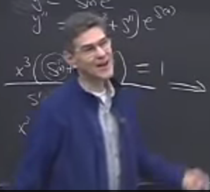

Carl Bender Mathematical Physics Lecture7 Note
Information
- 原出处: https://www.perimeterinstitute.ca/video-library/collection/11/12-psi-mathematical-physics
- 可以看自动生成的字幕: https://www.youtube.com/playlist?list=PLzcd6SoIscwjHuWRE38UXWG92uq0Sy4UF
- Bilibili: https://www.bilibili.com/video/BV1w4411q7x6?from
search&seid7852838902448285010 - Book: Carl M. Bender, Steven A. Orszag, Advanced Mathematical Methods for Scientists and Engineers I Asymptotic Methods and Perturbation Theory, 1999
Keywords
Pade technique for summing a series. Asymptotic series. Fuchs' theorem. Frobenius series.
Pade
Poles are "mocking up" the cut.
展示了 $\frac{\ln (1 + x)}{x}$ Pade 近似的结果. Mathematican 中可以用函数
PadeApproximant 来实现.
这是上节课尾巴.
Stirling's Series
$$\begin{align} \Gamma(x) \sim x^{x-1/2} e^{-x}\sqrt{2\pi} \left(1 + \frac{1}{12 x} + \frac{1}{288 z^2} - \cdots \right) \end{align}$$它收敛很慢. 但是变成 Pade 后, 就收敛很快. 但是 no idea why it works.
What is Asymptotic Series?
$$\begin{align} f(x) - \sum_{n = 0}^N a_n x^n \sim a_{N + 1} x^{N + 1} \quad \mathrm{as} \quad x\to 0 \end{align}$$means that
$$\begin{align} f(x) - \sum_{n=0}^N a_n x^n \sim a_{N + 1} x^{N + 1} \quad \mathrm{as} \quad x\to 0 \quad \mathrm{for} \quad \mathrm{all} \quad N \end{align}$$also
$$\begin{align} \lim_{x \to \infty} \frac{f(x) - \sum_{n=0}^N a_n x^n}{x^{N + 1}} = a_{N + 1} \quad \mathrm{for} \quad \mathrm{all} \quad N \end{align}$$只有说一个 series asymptotic to 某个函数时, 才有意义. 直接说某个 series 是不是 asymptotic series 是没有意义的.
对于一个 series, 总有一个 function 是此级数 asymptotic to 的.
但对于一个 function 只有一个 series 是 asymptotic to 它的.
A function has an unique asymptotic series. But a series could be asymptotic to many different functions.
asymptotic series 也可以有其它的形式, 如
$$\begin{align} f(x) - \sum_{n = 0}^N (a_n - a) x^n \sim a_{N + 1} x^{N + 1} \quad \mathrm{as} \quad x\to a \end{align}$$同样, $n$ 也不一定是整数. 可以是分数等等.
如
$$\begin{align} \frac{\Gamma(x)}{x^{x-1/2} e^{-x}\sqrt{2\pi}} \sim 1 + \frac{1}{12 x} + \frac{1}{288 z^2} - \cdots \quad \mathrm{as} \quad x \to \infty \end{align}$$An Example about "How do asymptotic series arise?"
对
$$\begin{align} x^3 y'' = y \end{align}$$在 near $x=0$ 处进行 local analysis.
偏题: 如何分析一个 second order linear DE?
拿到形如
$$\begin{align} a(x) y'' + b(x) y' + c(x)y = 0 \end{align}$$的方程, 首先化成 normal form. 两边同时除以 $a(x)$ , 变成了如下形式
$$\begin{align} y'' + A(x) y' + B(x)y = 0 \end{align}$$要分析它在 $x\to x_0$ 处的行为. How does $y(x)$ behave near $x = x_0$ ?
There are exactly three possibilities there.
case 1
$A(x)$ , $B(x)$ analytic near $x = x_0$ ( $x_0$ is a regular point)
此时有定理, Fuchs' theorem. (Lazarus Immanuel Fuchs (5 May 1833 – 26 April 1902) was a Jewish-German[1] mathematician who contributed important research in the field of linear differential equations)
All solutions have a Taylor series about $x = x_0$
$$\begin{align} y(x) = \sum_0^{\infty} (x - x_0)^n a_n \end{align}$$case 2
Not both $A$ and $B$ are analytical. But $(x - x_0) A(x)$ and $(x - x_0) B(x)$ are analytical. ( $x_0$ is a regular singular point)
At least one solution has the form (Frobenius series)
$$\begin{align} y(x) = \sum_0^{\infty} (x - x_0)^{n + \alpha} a_n \end{align}$$others
$$\begin{align} y(x) = \sum_0^{\infty} (x - x_0)^{n + \alpha} a_n \ln(x - x_0) \end{align}$$case 1 and case 2 solutions' converge radius is often the distance from $x_0$ to the nearest singularity.
case 3
$x_0$ is an irregular point.
local analysis
对于
$$\begin{align} x^3 y'' = y \end{align}$$来说
$$\begin{align} A = 0, \quad B = \frac{1}{x^3} \end{align}$$它属于 case 3. 如果强行写一个 Frobenius series 的解
$$\begin{align} y(x) = \sum_{n = 0}^{\infty} a_n x^{n + \alpha} \quad(a_n \neq 0) \end{align}$$那么代回原方程可以得到
$$\begin{align} \sum_{n = 1}^{\infty} (n - 1 + \alpha)(n - 2 + \alpha) a_{n - 1} x^{n + \alpha} = \sum_{n = 0}^{\infty} a_n x^{n + \alpha} \end{align}$$结果是 $a_0 = 0$ , $a_n = 0$ . 也就是它没有 Frobenius series 的解.
这个问题太难了, 让我们看一下一阶的问题, 能不能猜一下它的解.
$y' = \frac{y}{2}$
它的 case 1, 在 $x = 0$ 处是 regular point. 那么它有 Taylor series 形式的解. 当 然的, 它的解是
$$\begin{align} y(x) = C e^{\frac{x}{2}} = C \sum_{n = 0}^{\infty} \frac{(x/2)^n}{n!} \end{align}$$$y' = \frac{y}{2x}$
它是 case 2, 在 $x = 0$ 处是 regular singular point. 它的解为
$$\begin{align} y(x) = C \sqrt{x} \end{align}$$这是 Frobenius series, $\alpha = 1/2$ , 只有一项. Frobenius was right!
$y' = \frac{y}{2x^2}$
它是 case 3, irregular point. 但是它的可解的, 结果是
$$\begin{align} y = C e^{- \frac{1}{2x}} \end{align}$$它的形式是
$$\begin{align} y = e^{s(x)} \end{align}$$How do asymptotic series arise?
因此, Green (是 George Green?)给出了这样的 suggested, 一个 $y = e^{s(x)}$ 形式的 试探解( $s(x)$ is singular, blowing up at $x = 0$ )
$$\begin{align} y(x) = e^{a x^b}, \quad b<0 \end{align}$$如果直接将 $y = e^{s(x)}$ 代回 $x^3 y'' = y$ , 会得到 Riccati
$$\begin{align} x^3(s'' + s'^2) &= 1 \\ \Downarrow& \\ x^3(T' + T^2) &= 1 \end{align}$$如果 $s = a x^b$ 那么会得到
$$\begin{align} s' =& b a x^{b - 1}\\ s'' =& b(b - 1) a x^{b-2}\\ s'^2 =& b^2a^2 x^{2b - 2} \end{align}$$Mr. Green noticed that if $b < 0$ which of $s'', s'^2$ is more important as $x\to 0$ ? (Its an issue of 2b or not 2b. That's the point! -_- !!! Bender 讲了这么多就 只是为了玩 shakespeare 的梗...当然不是...) 当然是
$$\begin{align} s'' \ll (s')^2 \quad \mathrm{as} \quad x \to 0 \end{align}$$所以用了 the method of dominant balance( 第一节课讲的 ), 将等号的换成 $\sim$ , 问题 有了进展. 这也再次说明 equal sign make no progress! Replace this equation by an asymptotic relations
$$\begin{align} x^3(s'' + s'^2) &= 1 \\ \Downarrow& \\ x^3 s'^2 &\sim 1 \quad \mathrm{as} \quad x\to 0\\ \end{align}$$ha! I can solve that equation. It's only a first order euqation.

$$\begin{align} s \sim \mp C\frac{2}{\sqrt{x}}\quad \mathrm{as} \quad x\to 0 \end{align}$$Just like that! We cracked into the equation!
We know what $s$ is asymptotic to. 但是我们想要的是 $y(x) = e^{s(x)}$ . 那么问题 来了. If $f(x)\sim g(x)$ as $x\to x_0$ , is it true $e^{f(x)}\sim e^{g(x)}$ as $x\to x_0$ ? (因为 asymptotic 并不意味着 $f(x) - g(x)$ 很小, 它可以很大, 比如 $x^2 + x \sim x^{2}$ as $x\to \infty$ , 但它们相差无穷大!)
Only true when $f(x) - g(x) \ll 1$ as $x \to x_0$ . The one thing that you cannot do both sides of an asymptotic approximation is to exponent it.
$\mp \frac{2}{\sqrt{x}}\quad \mathrm{as}$ 叫做 controlling factor. 因此我们只能 roughly speaking
$$\begin{align} y(x) \sim e^{\frac{2}{\sqrt{x}}} \quad \mathrm{or} \quad e^{-\frac{2}{\sqrt{x}}} \quad \mathrm{as} \quad x\to 0 \end{align}$$有一个解在 $x \to 0$ 时很快地 blow up. 另一个趋于 $0$ . 这两个解都没有 Frobenius 或者 Taylor series.
Bender 最后总结, 新的概念就是这样被发明的. 这个方程的解一定是一个函数, 但是通常 的方法都没法表示, 所以 we're forced to a new way to represent the function.
最终的结果是
$$\begin{align} y(x) \sim e^{\mp \frac{2}{\sqrt{x}}} x^{3/4} \sum_{n = 0}^{\infty} a_n x^{n/2} \quad \mathrm{as} \quad x \to 0 \end{align}$$之后会发现这是个 divergent series. 所以说, divergent series are forced upon us. This is the only way to represent the solution. We don't have a convergent series representation.
之后会讲如何 sum that series and actually write down the answer.
Summary
介绍了 asymptotic series 的定义, 之后重点用一个例子说明我们是如何有了 asymptotic series 这个概念的: 我们发现了一些方程, 它的解的形式只能用 asymptotic series 来表 示. 这就像 $x^2 = -1$ 的解让我们不得不拥有了复数的概念一样.
Reference
- Stirling's Series
- Stokes' wedges (只有 Bender 这么叫?)
- Fuchs' theorem